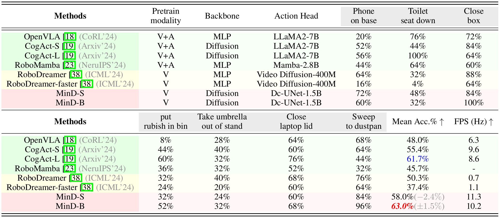
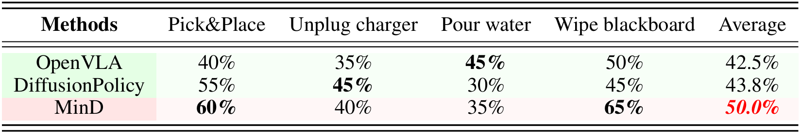
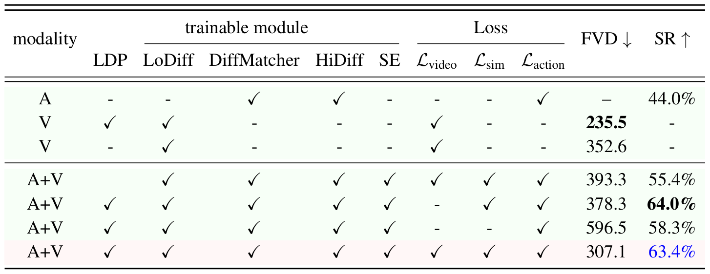
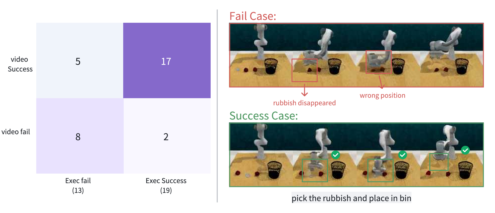

Experimental Results

Comparison of video generation result from LoDiff-Visual against real execution observation of HiDiff-Policy of RL-Bench and real-world Franka. |
Evaluation on RL-Bench
We first evaluate MinD in the RL-Bench evaluation environment. This simulation platform is a comprehensive robot learning benchmark and environment with 7 tasks designed to advance research in vision-guided robot manipulation with a single-arm Franka Panda robot and a front-view camera. We compare MinD with existing VLA models, including CogACT, RoboMamba, RoboDreamer, and OpenVLA. For the model using Mamba or LLM as the backbone, we colored it with a green background. We use a yellow background for the VLA models with a video generation backbone, and a red background for our method.
|

Evaluation and comparison on RL-Bench tasks. All models are finetuned on the collected 1000 trajectories (including 100 trajectories for each 7 tasks and 300 more randomly sampled tasks). |
The results show that MinD outperforms all the existing VLA models, especially in tasks requiring complex temporal reasoning, such as "Sweep to Dustpan" (96%) and "Close Laptop Lid" (68%), highlighting the strong capability of video generation models as the foundational backbone for comprehensive visual-language manipulations. Besides, MinD also achieves the highest inference speed of 11.3 FPS, showcasing its superior efficiency.
Real-world Evaluation with Franka Research 3 Robot
We evaluate MinD with a Franka Research 3 Robot to perform 4 real-world tasks: 1) pick and place, 2) unplug the charger, 3) pour water, 4) wipe the whiteboard. We collected a dataset with 100 human demonstration trajectories via teleoperation using a SpaceMouse. As shown in the table below, our model achieves competitive performance across all tasks, with notable strengths in tasks requiring precise manipulation, such as pick and place(60%) and wiping the whiteboard (65%).
|

Real-world evaluation with the Franka robot across four tasks, each with 20 trials of random configurations. |
Video Result Samples
Franka Panda Robot (in RL-Bench)
Franka Research 3
Ablation Study
Modality Configurations & Trainable Modules
We evaluate each configuration based on video generation quality (FVD [30]) and success rate (SR) in task execution. The results highlight the impact of key components such as LDP, diffusion modules (LoDiff, DiffMatcher, HiDiff), and loss functions (Lvideo, Lsim, Laction) on performance. It also shows that large-scale video data pretraining and diffusion modules are vital for improving how well our MinD robot framework executes and generates videos. In short, using both video and action data, pretraining, and all the loss functions are key for best results in robot learning.
|

Ablation study results. SE denotes the state encoder, LDP represents large-scale data pretraining, A denotes action and V is video. |
Case Study: Can Video Generation Enable Trustworthy VLA?
We also conducted case study exploring how video generation models (VGMs) enhance the trustworthiness of world-model-based VLA by enabling risk assessment and outcome prediction for robotic tasks. We demonstrate that VGMs can predict both successful and failed executions, offering actionable insights for safer real-world deployment. While effective, future work should aim to improve motion prediction and incorporate richer multimodal inputs for more robust and reliable VLA.
|

The left panel shows the confusion matrix, highlighting prediction accuracy for task outcomes. The right panel visualizes a failing case (top) with trajectory misalignment and a successful case (bottom) with accurate prediction. |